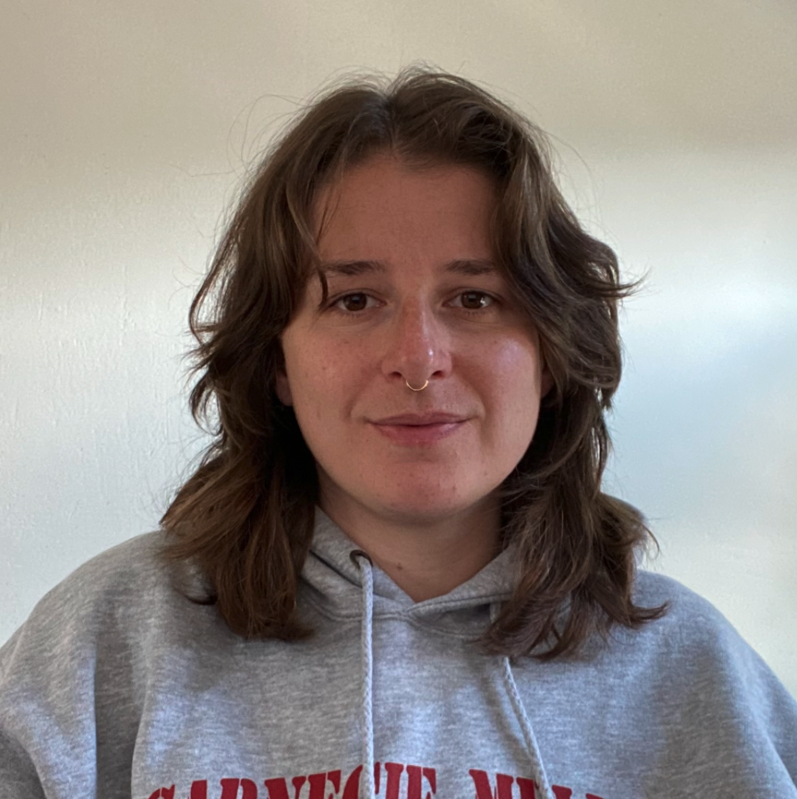

Workshop Aims and Scope
The goal is hence to favor a community-wide dialogue on new research perspectives through a workshop having the following objectives:
- Increase awareness of the algorithmic bias problem in IR.
- Identify dimensions influenced by algorithmic bias in IR.
- Solicit contributions addressing algorithmic bias in IR.
- Gain insights into recent advances and open issues in IR.
- Familiarize the IR community with current field practices.
- Uncover gaps in academic and industry research in IR.
Workshop Topics
The workshop welcomes contributions on topics about algorithmic bias in search and recommendation, focused (but not limited) to:
- Data Set Collection and Preparation:
- Studying the interplay between bias and imbalanced data.
- Designing methods for dealing with imbalances in data.
- Creating data pipelines for less biased data sets.
- Collecting data sets for the analysis of biased situations.
- Designing protocols for data sets tailored to bias analysis.
- Countermeasure Design and Development:
- Formalizing and operationalizing bias concepts.
- Conducting exploratory analysis that uncover bias.
- Designing treatments that mitigate biases.
- Devising methods for explaining biases.
- Studying causal and counterfactual reasoning for bias.
- Evaluation Protocol and Metric Formulation:
- Performing auditing studies with respect to bias.
- Conducting experimental studies on bias.
- Defining objective metrics that consider bias.
- Formulating bias-aware protocols to evaluate models.
- Evaluating mitigation strategies in unexplored domains.
- Comparative studies of existing evaluation protocols.
- Analysing scalability issues of debiasing methods.
- Case Study Exploration:
- E-commerce platforms.
- Educational environments.
- Entertainment websites.
- Healthcare systems.
- Social media.
- News platforms.
- Digital libraries.
- Job portals.
- Dating platforms.
Important Dates
- Submissions:
April 25, 2024May 2, 2024. - Notifications: June 6, 2024.
- Camera-Ready: June 20, 2024.
- Workshop: July 18, 2024 - Washington D.C., USA.
All deadlines are 11:59pm, AoE time (Anywhere on Earth).
Submission Details
We invite authors to submit unpublished original papers, written in English. Submitted papers should not have been previously published or accepted for publication in substantially similar form in any peer-reviewed venue, such as journals, conferences, or workshops.
The authors should consult the Springer’s authors’ guidelines and use their proceedings templates, either LaTeX or Word.
Papers should be submitted as PDF files to Easychair at https://easychair.org/conferences/?conf=bias2024.
We will consider three different submission types:
- Full papers (12 pages) should be clearly placed with respect to the state of the art and state the contribution of the proposal in the domain of application, even if presenting preliminary results. In particular, research papers should describe the methodology in detail, experiments should be repeatable, and a comparison with the existing approaches in the literature should be made.
- Reproducibility papers (12 pages) should repeat prior experiments using the original source code and datasets to show how, why, and when the methods work or not (replicability papers) or should repeat prior experiments, preferably using the original source code, in new contexts (e.g., different domains and datasets, different evaluation and metrics) to further generalize and validate or not previous work (reproducibility papers).
- Short paper (6 pages) or position papers (4 pages) should introduce new point of views in the workshop topics or summarize the experience of a group in the field. Practice and experience reports should present in detail real-world scenarios in which search and recommender systems are exploited.
Submissions should not exceed the indicated number of pages, including any diagrams and references.
All submissions will go through a double-blind review process and be reviewed by at least three reviewers on the basis of relevance for the workshop, novelty/originality, significance, technical quality and correctness, quality and clarity of presentation, quality of references and reproducibility.
Submitted papers will be rejected without review in case they are not properly anonymized, do not comply with the template, or do not follow the above guidelines.
The accepted papers and the material generated during the meeting will be available on the workshop website. It is planned to send the workshop proceedings for consideration for inclusion as a Springer's Communications in Computer and Information Science (CCIS) revised post-proceedings volume, indexed on Google Scholar, DBLP and Scopus. The authors of selected papers may be invited to submit an extended version in a journal special issue.
Please be aware that at least one author per paper needs to register and attend the workshop to present the work.
We expect authors, the program committee, and the organizing committee to adhere to the ACM’s Conflict of Interest Policy and the ACM’s Code of Ethics and Professional Conduct.
Keynote Speakers
Dr. Bhaskar Mitra
Microsoft Research based in Montréal, Canada
Title: Bias and Beyond: On Generative AI and the Future of Search and Society
Abstract: Robust access to reliable information is a key societal need. In this context, information retrieval (IR) research has responsibilities towards ensuring social good. Recognizing this responsibility, in recent years the IR community has engaged in research on concerns such as fairness and transparency in the context of information access. Emerging technologies such as generative AI is having transformative impact on IR today. However, the sociotechnical implications of employing these technologies in information access go far beyond concerns of bias and fairness. This raises concerns of how we should frame and conceptualize these potential consequences and risks through a sociotechnical lens. In this talk, we will deliberate on the sociotechnical implications of generative AI for information access. We will argue that there is both a critical necessity and an exciting opportunity for the IR community to re-center our research agendas on societal needs while dismantling the artificial separation between the work on fairness, accountability, transparency, and ethics in IR and the rest of IR research. Instead of adopting a reactionary strategy of trying to mitigate potential social harms from emerging technologies, the community should aim to proactively set the research agenda for the kinds of systems we should build inspired by diverse explicitly stated sociotechnical imaginaries. The sociotechnical imaginaries that underpin the design and development of information access technologies needs to be explicitly articulated, and we need to develop theories of change in context of these diverse perspectives. Our guiding future imaginaries must be informed by other academic fields, such as democratic theory and critical theory, and should be co-developed with social science scholars, legal scholars, civil rights and social justice activists, and artists, among others.
Short Bio: Bhaskar Mitra is a Principal Researcher at Microsoft Research based in Montréal, Canada. His research focuses on AI-mediated information and knowledge access and questions of fairness and ethics in the context of these sociotechnical systems. He is interested in evaluation and benchmarking, and co-organized the MS MARCO ranking leaderboards, the TREC Deep Learning Track (2019-2023), and the TREC Tip-of-the-Tongue Track (2023-2024). Before joining Microsoft Research, he worked on search technologies at Bing for 15+ years. He received his Ph.D. in Computer Science from University College London.

Dr. Nil-Jana Akpinar
Amazon Web Services
Title: Bias, Belonging, and the Long-Term Dynamics of Recommender Systems
Abstract: Recommender systems are socio-technical systems that actively shape individuals' online experiences by moderating the visibility of news, social media content, and products, thereby influencing preferences, beliefs, and choices. These systems hold significant power to sway public opinion, leading to potential adverse consequences for users and society. In response to calls for greater ethical scrutiny, recent research has focused on measuring and mitigating demographic bias in recommender systems. However, a measurement-construct gap exists between common exposure-based fairness metrics and more intuitive notions of equity for providers and users. This talk will explore how, despite appearing fair in aggregate, common fairness interventions often fail to address the long-term amplification of biases, reflecting a broader challenge of adequately addressing long-term dynamics in ethical recommender system research. Going beyond fairness, we will discuss wider ethical harms of recommender systems and examine the relationship between bias and belonging in social networks, specifically focusing on how recommendation algorithms affect authenticity and exclusion.
Short Bio: Nil-Jana Akpinar is a Postdoctoral Scientist at Amazon Web Services. Her research lies in Responsible AI with a particular focus on fairness, privacy, and safety in machine learning. Her work takes data and problem-centered perspectives to study impacts of noise, synthetic data, and long-term ethical impacts in algorithms. Prior to joining Amazon, Nil-Jana received her PhD in Statistics and Machine Learning from Carnegie Mellon University where she worked with Alexandra Chouldechova and Zachary Lipton. She is also a recipient of the 2021 Amazon Graduate Research Fellowship.
Program
The workshop will take place in presence in Washington D.C., USA. The workshop program will be published in June 2024. .
The workshop program is structured as follows.
| Timing | Content |
|---|---|
| 09:00 - 09:10 | Opening remarks |
| 09:10 - 10:05 | Bhaskar Mitra's keynote |
| 10:05 - 10:30 |
Spot thematic session 1 (short introduction)
|
| 10:30 - 11:00 | Coffee Break |
| 11:00 12:30 |
Spot thematic session 2 (short introduction)
|
| 12:30 13:30 | Lunch Break |
| 13:30 15:00 |
Spot thematic session 3 (short introduction)
|
| 15:00 15:30 | Coffee Break |
| 15:30 16:25 | Nil-Jana Akpinar's keynote |
| 16:25 17:00 | Discussion and concluding remarks |
Organization
Workshop Chairs
- Alejandro Bellogin , Universidad Autonoma de Madrid (Spain)
- Ludovico Boratto, University of Cagliari (Italy)
- Styliani Kleanthous, Open University of Cyprus (Cyprus)
- Elisabeth Lex, Graz University of Technology (Austria)
- Francesca Maridina Malloci, University of Cagliari (Italy)
- Mirko Marras, University of Cagliari (Italy)
Program Committee
- Ash Ashokan, University of Nebraska Omaha, USA
- Giacomo Balloccu, University of Cagliari, Italy
- Timo Breuer, TH Köln, Germany
- Iván Cantador, Universidad Autónoma de Madrid, Spain
- James Caverlee, Texas A&M University, USA
- Yashar Deldjoo, Polytechnic University of Bari, Italy
- Giorgio Maria Di Nunzio, University of Padua, Italy
- Hossein Fani, University of Windsor, Canada
- Saeed Farzi, K. N. Toosi University of Technology, Iran
- Alireza Gharahighehi, ITEC - KU Leuven, Belgium
- Fabian Haak, TH Köln, Germany
- Toshihiro Kamishima, Independent, Japan
- Aonghus Lawlor, University College Dublin, Ireland
- Cataldo Musto, University of Bari Aldo Moro, Italy
- Marinella Petrocchi, IIT-CNR, Italy
- Erasmo Purificato, Otto von Guericke Univ. Magdeburg, Germany
- Dimitris Sacharidis, Université Libre de Bruxelles, Belgium
- Philipp Schaer, TH Köln, Germany
- Manel Slokom, Delft University of Technology, The Netherlands
- Damiano Spina, RMIT University, Australia
- Gian Antonio Susto, University of Padova, Italy
- Marko Tkalcic, University of Primorska, Slovenia
- Antonela Tommasel, ISISTAN CONICET-UNCPBA, Argentina
- Helma Torkamaan, Delft University of Technology, The Netherlands
- João Vinagre, Joint Research Centre Eu. Commission, Italy
- Emine Yilmaz, Amazon, UK
- Eva Zangerle, University of Innsbruck, Austria
Register
Please register from the SIGIR 2024's main conference website following the instructions indicated at https://sigir-2024.github.io/attend_registration.html.
Related Workshops
We also invite you to check out the three related workshops:
- 4th International Workshop on Algorithmic Bias in Search and Recommendation (Bias@ECIR2023)
- 3rd International Workshop on Algorithmic Bias in Search and Recommendation (Bias@ECIR2022)
- 2nd International Workshop on Algorithmic Bias in Search and Recommendation (Bias@ECIR2021)
- 1st International Workshop on Algorithmic Bias in Search and Recommendation (Bias@ECIR2020)
Contacts
For general enquiries on the workshop, please send an email to alejandro.bellogin@uam.es, ludovico.boratto@acm.org, s.kleanthous@cyens.org.cy, elisabeth.lex@tugraz.at, francescam.malloci@unica.it, mirko.marras@acm.org.